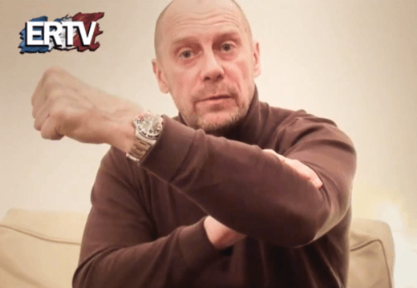
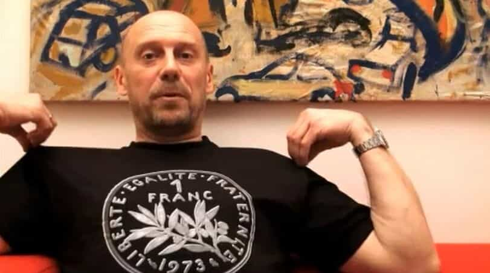

is an aspiring philosopher king, living the dream, travelling the world, hoarding FRNs and ignoring Americunts. He is a European at heart, lover of Latinas, and currently residing in the USA.


Alain Soral is an influential French-Swiss thinker, author, and filmmaker. His beliefs are summarized as “French Third Position,” basically a third party for those that reject the traditional left and right political views, and there have been Third Position movements in many European countries over the past several decades.
Major beliefs of Soral’s ideology include nationalism, political sovereignty, social conservatism, anti-globalism, anti-immigration, anti-feminism, anti-bankster, and a non-interventionist anti-war foreign policy. A major slogan of Third Position is “Reconciliation” between the Labor Left and the Values Right—economic policy which values individual work and labor, and social policy focused on nationalism and traditionalism.

Alain Soral was born in 1958 in southeastern France. He attended a well-regarded private Catholic school, before enrolling in the distinguished National School of Fine Arts in Paris, founded in 1648, and later transferred to study under the philosopher and economist Cornelius Castoriadis, a famous 20th century thinker.
Castoriadis favored autonomous societies that are self-aware of their autonomy and independence, and believed societies should provide legitimacy for their laws and government actions. Historically, this was often done through absolute monarchy by invoking religion and God, with the monarch having a direct connection to the almighty (What God has commanded is what we must institute with the law).
Modern capitalist societies proved their legitimacy through circular tautology; that is they claimed that capitalism was logical and just, and therefore whatever a capitalistic society deemed profitable was therefore logical and just. A just autonomous society was always questioning and challenging its laws, but at the same time adhering to, respecting, and upholding the law.
Castoriadis described modern society as a struggle between creative imaginary and capitalist imaginary:
“The repetition of empty forms, of conformism, apathy, irresponsibility, and cynicism at the same time as it is that of the tightening grip of the capitalist imaginary of unlimited expansion of “rational mastery,” pseudorational pseudomastery, of an unlimited expansion of consumption for the sake of consumption, that is to say, for nothing, and of a technoscience that has become autonomized along its path and that is evidently involved in the domination of this capitalist imaginary. The other road should be opened: it is not at all laid out. It can be opened only through a social and political awakening, a resurgence of the project of individual and collective autonomy, that is to say, of the will to freedom. This would require an awakening of the imagination and of the creative imaginary”
Soral loved books and knowledge, studying radicals from throughout the political spectrum. He was a dragueur de rue (street pick-up artist) when the PUA movement was virtually unknown. He developed a skill at attracting young, narcissistic, valueless city girls and claimed to bed hundreds of women, and published a book on game in 1996. His experiences with these women led him to develop strong anti-feminist beliefs.
He developed a strong dislike for the French Bobos—Bourgeois bohemians, younger wealthy highly educated narcissistic hedonists interested in fashion and trends. Perhaps something like rich hipsters, but less retro, more fashionable and trendy.
He joined the French Communist Party, motivated by his dislike of the bobos, and his camaraderie with the working man. The Communist Party, along with the Front National, were among the few opponents of the creation of the EU. Soral studied the works of Marx and other Marxists before leaving to join the far right Front National, where he was a speechwriter for Marie Le Pen. He noted that both Communists and Front National members were strongly nationalistic, and indeed many workers left the Communist Party to join FN around this time.

He became a strong critic of feminism and minority politics (gay, feminist, and Islamist or other racial multicultural groups). After Front National performed poorly in the 2007 elections, he formed Equality and Reconciliation, seeking to consolidate ideas on the left and right who believed in nationalism, patriarchy, anti-communism, anti-immigration, and anti-Zionism. E&R is an alternative news site, with some tendencies to the American alt-right, pro-nationalist, and critical of modern culture and feminism. He describes it as “Left for the workers and Right for morals.”
He is a boxer, and since 2004, has coached boxing. He records videos, has a regular feature naming the “cunt of the month,” and his works and website are very popular despite harsh attacks against him in the mainstream media.
Trolling a feminist
Not much is available in English of Soral, and even English subtitles on his many videos are hard to find. I have but a cursory understanding of French, so I have relied on secondary sources and translations. His major beliefs are:
Views feminism as not pro-work, as women have always worked, but instead as anti-family and anti-mother. Discusses two classes of feminists: freaks and bitches. The real struggle is between rich and poor, not man and woman, who are naturally attracted to each other. He has attacked women’s magazines as altering the social conscience and relegating women to the status of objects. Stresses self-improvement and virility in men.
Opposed to valueless consumption and consumerism. In favor of bankster-free economics, and an end to the nanny state. Opposes “desire society” and the cult of celebrity.
Opposed to the Globalist Empire, and American Imperialism, attempting to spread its cultural, ideological, economic, social views everywhere and to destroy all nation-states.
Has attacked Jewish lobbying and intervention in French affairs. Made statements criticizing the Jewish people for being ostracized in societies around the world, throughout history, which earned him an immediate and harsh media blackout. He makes a distinction between French Jews and Zionism, saying that Zionists are opposing the interests of France and French Jews.
Favors nationalism, not communitarianism. Calls communitarianism “a poison.” Opposed to ethnic, racial, sexual, Islamist or feminist communitarianism, which is opposed to morality and national standards. Opposes the public effeminate, homo and transsexual society, and laments the lack of strong male role models. Makes a strong distinction between homosexuality and the Gay Pride community movement, which promotes drag queens, parties, vulgar parades, and hypersexualization.
Opposes vulgar language, dress, and speech, especially in women. Has said he prefers publicly wearing the Muslim veil to thong underwear. Would go crazy at a Slutwalk. Critic of profanity and vulgarity; proponent of morality and modesty.
Feels the “menace of Islam” is an artificially created and manipulated threat; primitive Islamic society is not a real threat to modern western states, and capitalistic globalist interests manipulate the region to destroy the anti-globalist anti-feminist culture of Islam, to foster animosity between social groups, to possibly create a clash of civilizations, or world war, leading to a full globalist takeover, and to loot Mideast nations, and that the fundamental values of moderate Islam are perfectly compatible with French moderate Catholic views.
Opposed to the decline in western values and culture, and the sorry state of mainstream media, who has labeled him a pariah.
Many like-minded red pill men are turned off by the left-right politics in America. The third position combines right views on nation, morality, and law, with some left positions on social issues and economics. I believe if both the left and right hate you, you are probably doing something right. The ideas here strongly resonate with neomasculinity. Soral’s ideas are stimulating and interesting and definitely deserve further investigation.
An excellent summary of Soral and his beliefs is available here.
Read More: What Is Neomasculinity?